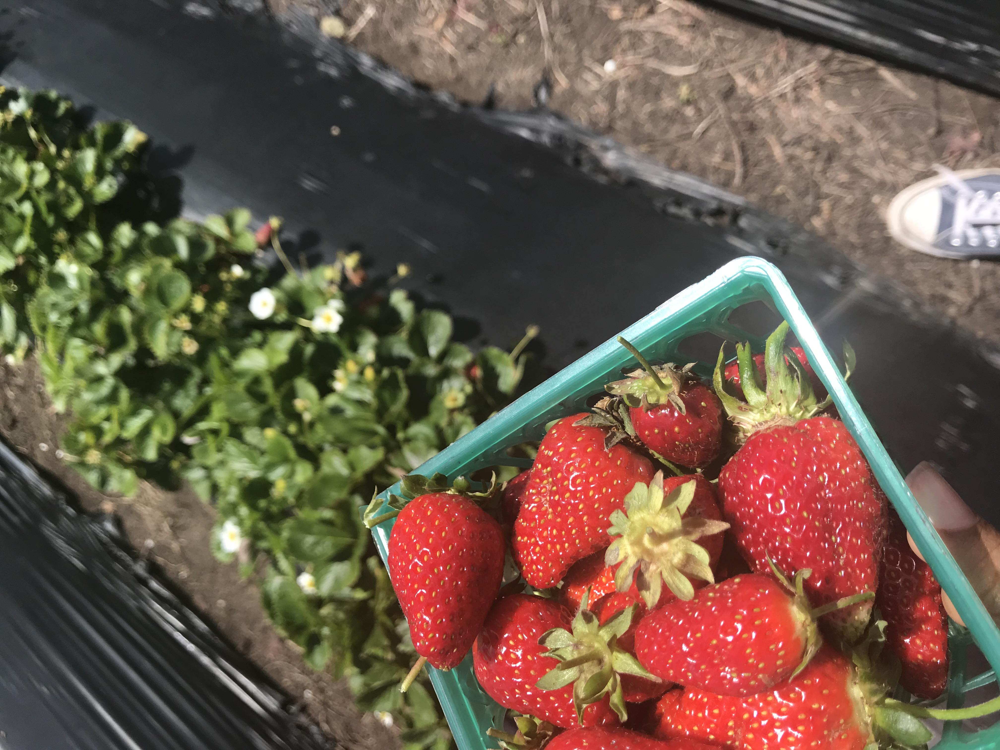
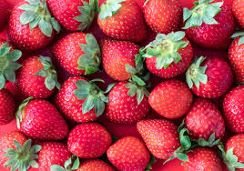
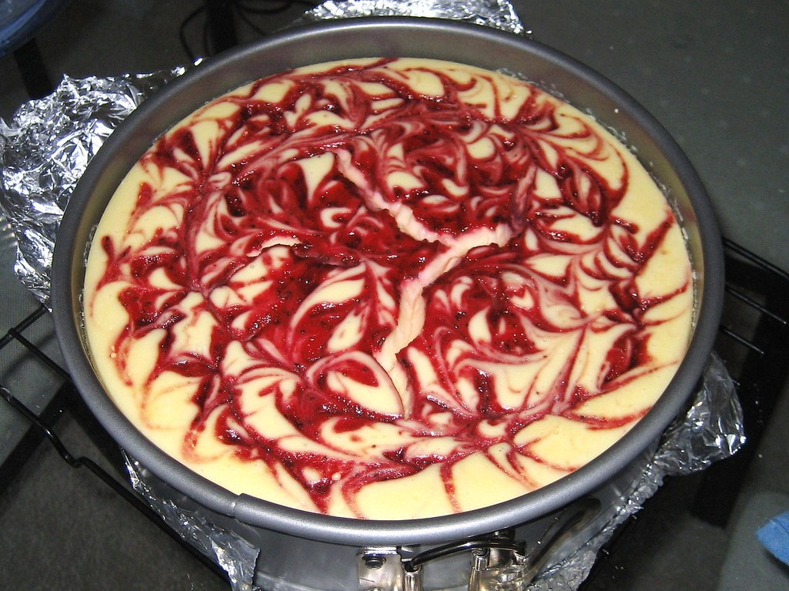

Anyone can make a beautiful, delectable strawberry chessecake like this one in just a few steps.
Picking the strawberries yourself provides for the best made-from-scratch experience. I picked these near Davenport Beach, but here is a list of other places you can go in California. If you don't have the time of course, store bought strawberries will also do.
1. Preheat oven to 350 degrees. In a large bowl, pour the melted butter over the crushed graham crackers and mix well. Pat mixture into an 8in springform pan
2. Using a large mixing bowl and a stand mixer (a hand mixer will also work), combine cream cheese, sugar, milk and vanilla
3. Add eggs one at a time, do not overmix. Then stir in the flour and baking powder.
4. Pour half of mixture into the prepared springform pan. Add half of pureed strawberries and swirl around the cheesecake with a fork
5. Repeat for the second half of the mixture. The cheesecake should look like this
6.Bake in oven for 45-50 minutes. Let cool for one hour on the counter and chill in the fridge for at least 4 hours
7. Gently place sliced stawberries on top in a spiral pattern. Serve with any remaining puree.
Voila!!